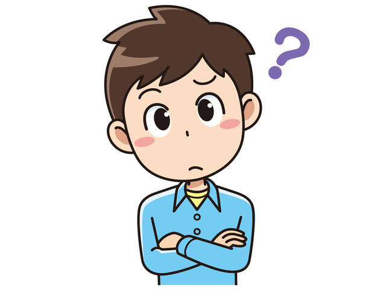
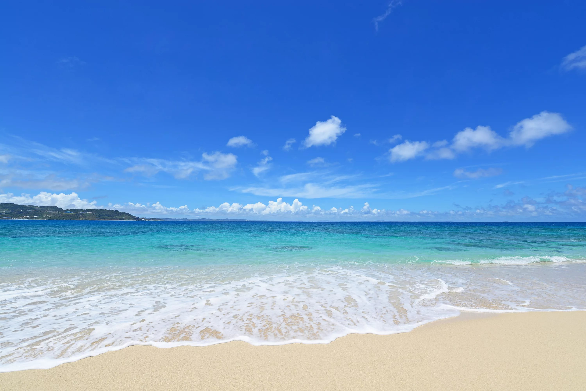

Интересно, почему здесь ничего нет?
Есть возможность посидеть и подумать в течении 10 секунд после которых произойдет автоматическое перемещение на главну страницу сайта
Стилиста на Кипре - Екатерины Ростовой.

Но если ждать не хочется, можно выбрать свой путь самостоятельно
Список страниц
- Главная страница
- Блог
- Список услуг
- Обо мне
- Контакты